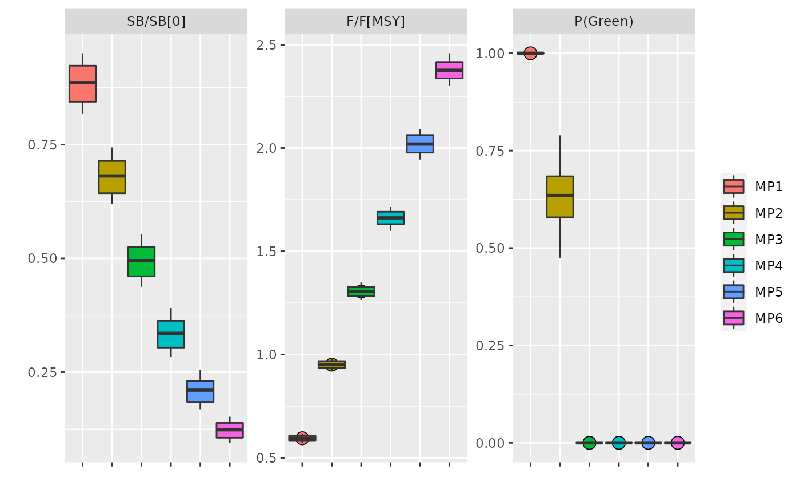

Boxplot by MP for a range of statistics Figure 3
data(perf)
# A data.table of performance statistics per run,
head(perf)
#> run statistic year data iter name mp
#> 1: MP1 FMSY 2038 0.5901713 1 F/F[MSY] MP1
#> 2: MP1 FMSY 2038 0.5765500 2 F/F[MSY] MP1
#> 3: MP1 FMSY 2038 0.5907079 3 F/F[MSY] MP1
#> 4: MP1 FMSY 2038 0.6117634 4 F/F[MSY] MP1
#> 5: MP1 FMSY 2038 0.5811830 5 F/F[MSY] MP1
#> 6: MP1 FMSY 2038 0.6093237 6 F/F[MSY] MP1
# plot selected statistics
plotBPs(perf, statistics=c("SB0", "FMSY", "green"))
plotBPs(perf, statistics=names(statistics))
#> Error in eval(stub[[3L]], x, enclos): object 'statistics' not found
# Add targets and limits by statistics, as named vectors
plotBPs(perf, statistics=c("SB0", "FMSY", "green"),
target=c(SB0=0.40, FMSY=1, green=0.5), limit=c(SB0=0.10))
# size control the diameter of the point behind thin boxplots
plotBPs(perf, statistics=c("SB0", "FMSY", "green"), size=3)
